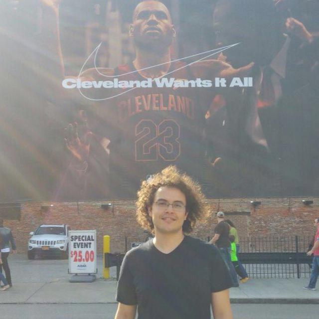

---
# You don't need to edit this file, it's empty on purpose.
# Edit theme's home layout instead if you wanna make some changes
# See: https://jekyllrb.com/docs/themes/#overriding-theme-defaults
layout: index
title: "Home"
---

I am Altug Karakurt, an electrical and computer engineering master's student at
The Ohio State University. I am interested in
Machine Learning, Communication Networks and Information Theory.
You can find me at the following links: